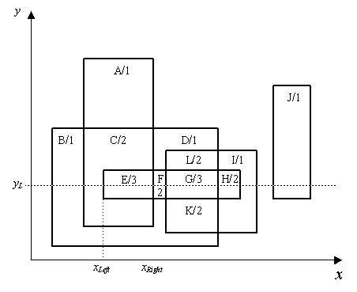

Consider a set of rectangles in 2D space as illustrated in the
given figure. Overlapping or not, they define a set of regions with
different shapes. In the example of the figure, there are twelve regions,
identified from A to L). Let OD (Overlapping
Depth) be the number of rectangles that overlap in each region (in the
figure, the number associated to each region corresponds to its
OD).
Consider now a horizontal line, y=yL. This line traverses the above
structure and finds different values of OD. Note that there can
be repeated values of OD, hence, there can be more than one maximum
value of OD.
In the example of the figure, the maximum value of OD is 3 and
it appears wice (regions E and G).

The input is a text file, containing several lines as follows. The first text line of the input contains the number NR (integer format) of rectangles. It is followed by NR text lines containing, each one, with the coordinates of two opposed vertices of a rectangle, in the sequence x1, y1, x2, y2, separated by single spaces. No order is supposed, in this case, for point 1 and point 2 and numbers may be written in integer or decimal format. The next text line is the number NL (integer format) of horizontal lines to process. It is followed by NL text lines, each one containing the value yL defining the horizontal line (integer or decimal format). The separator between values in a text line is the space character.
NL text lines, each one containing the three values that characterise the problem solution for a horizontal line (in this order): ODFM (integer format), xLeft and xRight (decimal format with two decimal digits). If the horizontal line does not intersect any rectangle, the output text line contains only the value 0 (integer format). The separator between values in a text line is the space character. The output text lines must keep the order of the input text lines related to horizontal lines.
1 3 -5.00 -2.00 -1.00 2.0 2.5 -1 -4.5 1.0 4 3 0 -4 4 -0.2 -4.50 -3.8 1.50
2 -4.50 -1.00 0 1 0.00 4.00 1 -5.00 -1.00